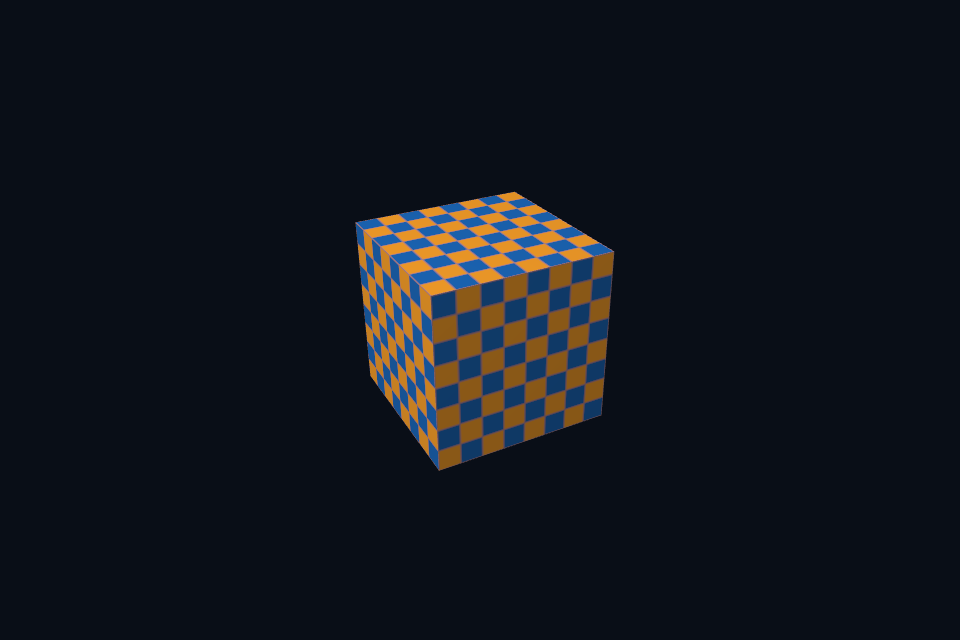

vk20_msaa_resolve · 4x MSAA 与 Resolve
54 课目录
目的与实际执行
dynamic rendering 不创建 VkFramebuffer，但每帧仍要选择正确 image view。MSAA 例子使用多样本颜色/深度，resolve 到单样本交换链图像；管线 sample count 与附件一致。
多样本颜色和深度为 4x，graphics pipeline sample count 同样 4x；dynamic rendering 的 resolve attachment 写单样本交换链目标。输入与输出的用途和布局均要正确。
本程序有独立实验选择与验证路径，公共实现集中在 advanced_labs.cpp。设备/API 检查、数值 compute 与图形渲染采用不同证据；不是每个程序都会弹出窗口。
构建和运行
cmake --preset vulkan-native
cmake --build --preset vulkan-native-debug --target vk20_msaa_resolve --parallel 4
.\Vulkan\native\build\bin\Debug\vk20_msaa_resolve.exe
深入学习：数据、接口与执行
本课的真实源码切片
来自 Vulkan/native/common/native_app.hpp，第 412—455 行；这是现有实现的局部摘录，末尾可能处于函数中间，不是可单独编译的完整程序。
VkRenderingAttachmentInfo color{VK_STRUCTURE_TYPE_RENDERING_ATTACHMENT_INFO};
color.imageView =
options.samples == VK_SAMPLE_COUNT_1_BIT ? targetView : swap.multisample.view;
if (options.samples != VK_SAMPLE_COUNT_1_BIT) {
color.resolveMode = VK_RESOLVE_MODE_AVERAGE_BIT;
color.resolveImageView = targetView;
color.resolveImageLayout = VK_IMAGE_LAYOUT_COLOR_ATTACHMENT_OPTIMAL;
}
color.imageLayout = VK_IMAGE_LAYOUT_COLOR_ATTACHMENT_OPTIMAL;
color.loadOp = VK_ATTACHMENT_LOAD_OP_CLEAR;
color.storeOp = VK_ATTACHMENT_STORE_OP_STORE;
color.clearValue.color = {{.035f, .055f, .09f, 1}};
VkRenderingAttachmentInfo depth{VK_STRUCTURE_TYPE_RENDERING_ATTACHMENT_INFO};
depth.imageView = swap.depth.view;
depth.imageLayout = VK_IMAGE_LAYOUT_DEPTH_ATTACHMENT_OPTIMAL;
depth.loadOp = VK_ATTACHMENT_LOAD_OP_CLEAR;
depth.storeOp = VK_ATTACHMENT_STORE_OP_DONT_CARE;
depth.clearValue.depthStencil = {1, 0};
VkRenderingInfo render{VK_STRUCTURE_TYPE_RENDERING_INFO};
render.renderArea = {{0, 0}, swap.extent};
render.layerCount = 1;
render.colorAttachmentCount = 1;
render.pColorAttachments = &color;
render.pDepthAttachment = &depth;
vkCmdBeginRendering(cmd, &render);
if (swap.scene) {
float time = smoke ? 1.f : float(glfwGetTime());
if (options.update)
options.update(*swap.scene, time);
swap.scene->render(cmd, swap.extent, time);
}
vkCmdEndRendering(cmd);
if (mode == 10) {
barrier(cmd,
target,
VK_IMAGE_LAYOUT_COLOR_ATTACHMENT_OPTIMAL,
VK_IMAGE_LAYOUT_TRANSFER_SRC_OPTIMAL,
VK_PIPELINE_STAGE_2_COLOR_ATTACHMENT_OUTPUT_BIT,
VK_ACCESS_2_COLOR_ATTACHMENT_WRITE_BIT,
VK_PIPELINE_STAGE_2_BLIT_BIT,
VK_ACCESS_2_TRANSFER_READ_BIT);
barrier(cmd,
swap.images[imageIndex],
VK_IMAGE_LAYOUT_UNDEFINED,
同主题跨 API 导航
先预测，再验证
列出 resize 影响的对象，并区分需要重建和只需更新参数的内容。
参考推导：颜色/深度/离屏存储及其 view 常需重建；viewport/scissor/aspect 更新；固定格式未变时管线不一定重建，具体取决于其不可动态状态。
在斜边放大观察单样本与 4x，同时说明为什么纹理莫尔纹仍可能存在。
参考推导：MSAA 主要改善几何覆盖边缘；纹理缩小和 shader 高频还需要 mip、过滤或其他策略。不要把所有走样归为同一个环节。
验证与边界
运行 --smoke 执行有限自动检查。数值实验读取实际 GPU 结果，图形实验检查非空图像并可查看读回。交互重建与性能还需额外证据；窗口 renderer 当前保留串行等待，双槽计算实验不会被描述为完整多帧呈现引擎。
实际画面
